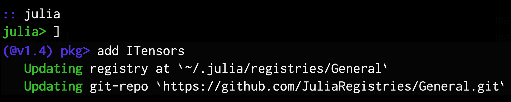

Installing Julia and ITensor
Installing Julia Locally and On a Cluster
Because Julia is a new language, it is usually not pre-installed on machines such as supercomputing clusters. But it is easy to install yourself both on your own machine and in your supercomputing environment. Here we will briefly cover installing Julia on your own machine, then discuss setting it up yourself on a supercomputer.
Installing Julia on Your Own Machine
To install the Julia language, visit https://julialang.org/downloads/ for downloads and installation instructions. Or consider using your system's package manager.
Cluster Install of Julia and ITensor
If you would like to use Julia on a remote cluster, such as at many labs or universities, but Julia is not available system-wide, you can still easily install your own local version of Julia. A local install will offer the same performance and features (package manager, etc.) as a system-wide install, and you can upgrade it at your own pace.
Once you set up Julia in your cluster account, you can install ITensor in the same way as on your personal computer (see next section on installing ITensor).
To install Julia locally within your cluster account, follow these basic steps (details will vary depending on your setup):
- Download a binary version of Julia here. On a remote Unix or Linux cluster, you can use the program
wgetto download remote files. (Right click on the link on the Julia downloads page to the Generic Linux on x86, 64-bit Julia download to copy the link to pass to thewgetprogram.) - Use the tar program to uncompress the .tar.gz file you have downloaded.
- Create a soft link somewhere in your PATH (such as in the bin/ subfolder of your home folder, which you might need to create) pointing to the file "bin/julia" inside of the uncompressed Julia folder you just created.
For example, the set of commands might look like this (where these commands are assumed to be executed in your home directory):
$ cd
$ mkdir -p bin
$ wget https://julialang-s3.julialang.org/bin/linux/x64/1.7/julia-1.7.2-linux-x86_64.tar.gz
$ tar xvzf julia-1.7.2-linux-x86_64.tar.gz
$ ln -s julia-1.7.2/bin/julia bin/juliaIf you want to install Julia 1.6.6, you would change 1.7 to 1.6 and 1.7.2 to 1.6.6. In general we recommend using the current stable release of Julia, which you can find out by going to the Julia Downloads page. We also don't recommend using versions of Julia below 1.6, which are no longer compatible with ITensors.jl as of ITensors 0.3.
After these steps, you should be able to type julia from your terminal to run Julia in interactive mode. If that works, then you have the Julia language and can run it in all the usual ways. If it does not work, you may need to log out and back in, and check that the bin directory is in your program execution path (PATH environment variable).
Explanation of the sample commands above:
- The first command
cdgoes to your home directory. - The second command makes a new folder
bin/under your home directory if it does not already exist. - The third command downloads the Julia language as a compressed tar.gz file. (You may want to do this step and the follwing steps in a different folder of your choosing.)
- The fourth command uncompresses the tar.gz file into a folder called (in this example)
julia-1.7.2. - The last command makes a soft link called
juliain yourbindirectory which links to the Julia language binary within the folder you just unpacked containing the Julia language.
Installing ITensor (ITensors.jl Package)
Installing the Julia version of ITensor is easy once you have the Julia language installed. For more information about installing Julia, please see the Julia language downloads page.
Once you have installed Julia on your machine,
- Enter the command
juliato launch an interactive Julia session (a.k.a. the Julia "REPL") - Type
]to enter the package manager (pkg>prompt should now show) - Enter the command
add ITensors - After installation completes, press backspace to return to the normal
julia>prompt - Optional but Recommended: Enter the command
julia> using ITensors; ITensors.compile()to compile a large fraction of the ITensor library code and following the instructions afterward to make an alias for loading a pre-built ITensor system image with Julia. This step can take up to 10 minutes to complete but only has to be done once for each version of ITensor. See the section on compiling ITensor for more information.
Sample screenshot:
